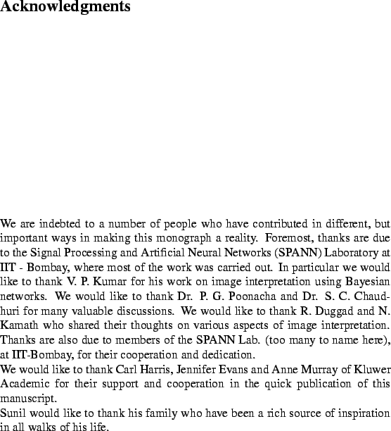

Next: Image Interpretation
Up: Introduction
Previous: Introduction
Computer vision is the enterprise of automating and integrating a wide
range of processes and representations useful for vision
perception.
Though there is no strict demarcation between vision problems in terms of
classification, we can broadly categorize vision problems into (i)
low-level visionvision, low-level problems and (ii)
high-level visionvision, high-level problems. Low-level
vision problems are essentially image-image image-image task
vision tasks,
for example edge
detection, segmentation, optical
flow estimation and depth estimation from
stereo pair to name a few, and high-level vision problems are
image-scene image-scene task
vision tasks, where the objective is essentially to develop an
understanding of the 3-D scene contents contained in the 2-D image.
The tasks of
image recognition, scene
interpretation or
scene understanding, navigation can be categorized
as high-level
vision.
One can get an idea of the
scope of computer visionvision,scope of by considering Table
1.1.
Figure 1.1:
Scope of Computer Vision.
|  |
It can be observed that
image interpretation or scene understanding is a high-level
task, nevertheless, inputs to this high-level vision task come from
various low-level vision modulesvision, modules.
Next: Image Interpretation
Up: Introduction
Previous: Introduction
2004-02-10